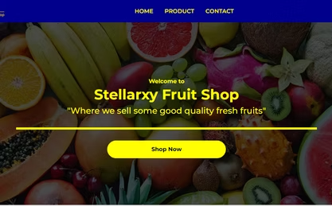
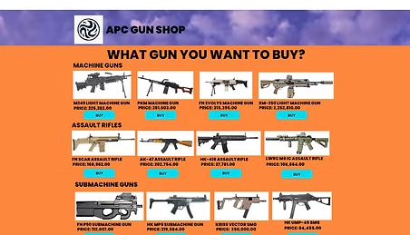
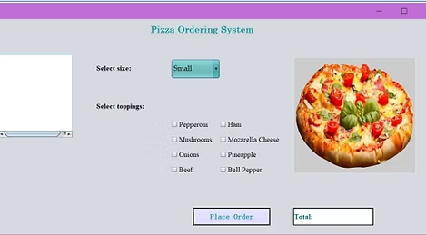
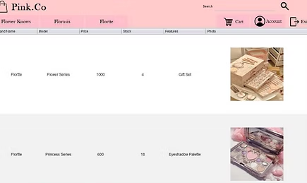
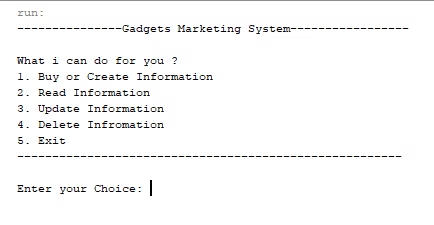
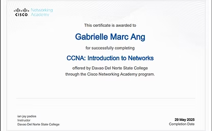
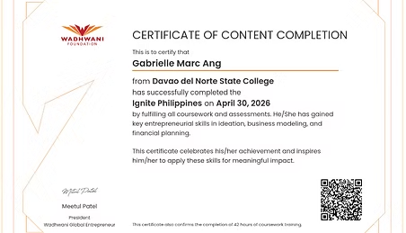

Stellarxy Fruit Shop
A responsive fruit shop website created to display fresh fruit products with a clean homepage, navigation menu, and shop call-to-action.
Web Design • Responsive WebsiteWelcome to my portfolio
I am a Bachelor of Science in Information Technology student at Davao del Norte State College. This portfolio showcases my learning journey, projects, certifications, and skills in technology and systems development.
About Me
This portfolio presents my academic and project-based experiences as a BSIT student. It highlights the websites, systems, and activities I have created while improving my knowledge in programming, web development, database management, and computer networking.
Through these works, I continue to build my skills in designing user-friendly interfaces, developing functional systems, and applying technology to solve real-world problems.
Projects

A responsive fruit shop website created to display fresh fruit products with a clean homepage, navigation menu, and shop call-to-action.
Web Design • Responsive Website
A product-based website interface that presents different product categories, item images, names, and prices in an organized layout.
Web Design • Product Listing
A graphical user interface project that allows users to select pizza size, toppings, and place an order with a calculated total.
GUI Project • Ordering System
A database project for managing makeup sales information, including product details such as brand name, model, price, stock, features, and photos.
Database • Sales Management
A Java-based console system that allows users to buy or create information, read information, update information, delete information, and exit the program.
Java • Console ApplicationCertifications

Completed through Davao del Norte State College and the Cisco Networking Academy Program.
Completed: May 29, 2025
Completed a course focused on entrepreneurship, ideation, business modeling, and financial planning.
Completed: April 30, 2026Contact
For inquiries, collaborations, or academic-related communication, you may contact me through my email address.
ang.gabriellemarc@dnsc.edu.ph